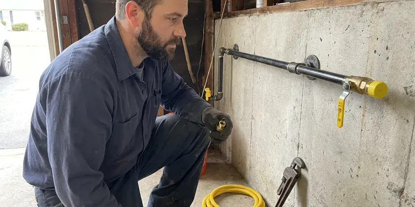
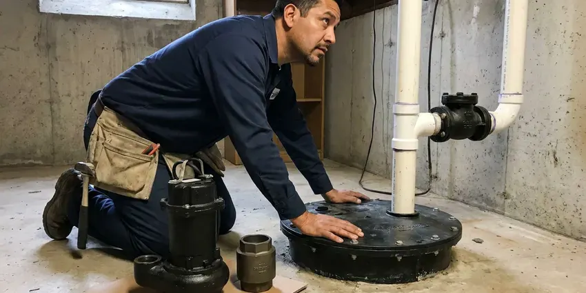

Basement Sump Pump Installation in Morgantown, WV
Is your Morgantown basement prone to flooding? A new sump pump from GJK Plumbing offers important protection for your property in West Virginia.
- Same-Day Pump Installs Available
- Local Morgantown Experts
- Battery Backup Options
- Upfront Pricing
Expert Sump Pump Installation Services in Morgantown, WV.
There is no reason to wait for a flood to protect your home. Call us for professional installation.
Your Trusted Source for Basement Sump Pump Installation in Morgantown, WV
GJK Plumbing installs basement sump pumps for homeowners who have finished lower levels, walkout basements and below-grade mechanical rooms. We dig or enlarge the sump pit, set a sealed liner, install a properly sized pump and route the discharge well away from your foundation. Every system is tested with water before we leave.
Our expertise includes:
- Pit excavation and liner installation through concrete slabs and hard soil
- Comprehensive site evaluation for ideal pump placement.
- Sizing and selecting the right pump for your basement's needs.

Additional Plumbing Installation Services in Morgantown, WV
We install water heaters, pumps, lines, and fixtures across Morgantown, WV with precision workmanship that meets every local code.




Professional gas line installation, Morgantown

Customers
Why Choose GJK Plumbing for Basement Sump Pump Installation in Morgantown, WV?
Choosing the right plumber for your basement sump pump installation is crucial for long-term protection. GJK Plumbing brings years of experience and a commitment to quality service, ensuring your system works when you need it most.
- Foundation Protection, Keeping groundwater away from your foundation helps prevent structural issues and extends your home's lifespan.
- Local Expertise, We understand the drainage and soil conditions that affect Morgantown basements.
- Clean Install, We cut, dig and patch concrete cleanly and haul away all debris.
Citywide Coverage
Whether your basement sits on a hillside lot or a flat parcel with poor drainage, we serve every neighborhood in Morgantown. We plan discharge routes around your lot grading, HOA rules and neighboring properties.
Experienced Team
Each plumber at GJK Plumbing is well trained in assessing basement water issues and recommending the most effective sump pump solutions. Our expertise delivers a professional, long-lasting installation for your home in Morgantown.
Safety-First Approach
Safety and code compliance come first in every basement sump pump installation we perform. We make sure of proper electrical connections, discharge line routing and pit construction to prevent hazards and keep the system running efficiently.
Trusted Certified Morgantown Plumbing Services Professionals
At GJK Plumbing, we take pride in providing licensed, certified plumbing services throughout Morgantown, WV. Backed by leading industry credentials, our experienced plumbers combine technical skill with genuine customer care. Whether it is repair, installation, or maintenance, we follow strict safety and quality standards to deliver long-lasting results you can trust.
Call Us Now PHCC Plumbing Contractor Recognition
PHCC Plumbing Contractor Recognition Better Business Bureau (BBB) Accreditation
Better Business Bureau (BBB) Accreditation Angi Certified Pro
Angi Certified Pro ISO 9001 Quality Management Certification
ISO 9001 Quality Management CertificationDependable Basement Sump Pump Installation Services in Morgantown, WV
Wayne Sump Pump Installation in Morgantown, WV
Wayne sump pumps offer a range of options, from basic utility pumps to advanced systems with built-in alarms and smart features. Our technicians are experienced in installing Wayne pumps, providing efficient water removal for your Morgantown, WV basement. We help you choose the right Wayne model for your needs and complete a professional installation that gets the most from its performance and lifespan.

Zoeller Sump Pump Installation in Morgantown
Zoeller pumps are known for their durability and reliability, making them a popular choice among homeowners. GJK Plumbing is skilled in installing many Zoeller sump pump models, including the M53 Mighty-Mate and other high-performance series. We make sure your Zoeller pump is correctly tied into your Morgantown home's plumbing to deliver steady, flood-preventing service, backed by the manufacturer's warranty.
Sump Pump Basin and Discharge Line Installation in Morgantown
A complete sump pump system requires a properly installed basin and discharge line. We handle the excavation and placement of the sump basin, setting it at the lowest point of your basement floor so it collects water effectively. We also install the discharge line, ensuring it is correctly sloped, sealed and routed away from your foundation to a suitable drainage area, so water does not find its way back into your Morgantown property.
Battery Backup Sump Pump Installation in Morgantown, WV
Power outages are common, especially during severe weather, and they leave your primary sump pump useless. We offer and install battery backup sump pump systems that switch on automatically if the power goes out, providing continuous protection for your basement in Morgantown, WV. Snowmelt combined with spring rain can raise rivers and groundwater, putting extra pressure on foundations and drainage systems. These systems include a deep cycle battery and a secondary pump, so your basement stays dry even when the electricity fails.
Residential Basement Sump Pump Installation in Morgantown
Protecting your family home from water damage is our top priority. We install sturdy residential sump pump systems sized to your basement and the rainfall Morgantown actually gets. Our plumbers precisely dig the sump pit, install the liner, and connect the pump to your home's drainage system and power supply for reliable operation for years to come. We also make sure the discharge line directs water far away from your foundation.
Primary Sump Pump Replacement in Morgantown
If your existing sump pump is old, failing or no longer adequate for your home, GJK Plumbing offers expert primary sump pump replacement. We can promptly remove your old unit and install a new, more efficient model, lowering the risk of future flooding. Our plumbers assess your current setup, recommend fitting replacements and handle a smooth changeover. This service is crucial for keeping effective flood protection in your Morgantown home.
Pedestal Sump Pump Installation in Morgantown
Pedestal sump pumps are an excellent choice for narrow or shallow sump pits, as their motor sits above the water level. This design makes them easier to maintain and can sometimes offer a longer lifespan because the motor stays out of the water. GJK Plumbing can expertly install pedestal sump pumps in your Morgantown home, with the right sizing and setup for effective water removal without crowding your pit.

Pedestal Sump Pumps in Morgantown
Pedestal pumps keep the motor above the pit, which makes them easier to service and a solid fit for narrow pits in older homes. They usually last a long time because the motor never sits in water. The tradeoff is more noise and a less finished look, so we generally recommend them for utility rooms rather than living spaces. We install them with a rigid discharge, a quality check valve and a float rod set to your pit depth.
Basement Sump Pump Installation Near Me in Morgantown, WV
GJK Plumbing is dedicated to serving homeowners in Morgantown and the surrounding communities. We are the go-to choice for basement sump pump installation, offering prompt, professional service right in your neighborhood. Our commitment to quality keeps your home protected against flooding, providing peace of mind.
Our plumbers are local and know how Morgantown lots drain during heavy rain. We look at your grading, gutters and window wells along with the pump itself. That full picture helps us recommend a system that keeps the whole lower level dry.
GJK Plumbing at a Glance
- Licensed and insured plumbers serving Morgantown, WV
- Same-day appointments and 24/7 emergency response
- Clear written estimates, no hidden fees
- 4.8-star rated by 832+ West Virginia customers
Morgantown Map
Morgantown Information
- Population
- 30,429
- Area codes
- 304/681/724
- Service area
- Morgantown and communities within 40 miles
- Nearby
- Brookhaven, Cheat Lake, Fairmont, Bridgeport
A dependable basement sump pump works to manage groundwater in Morgantown, WV homes and prevents costly water damage when heavy rain arrives.
Expert Services
Trust our professionals for reliable GJK Plumbing solutions in Morgantown, WV.
Our Specialized Plumbing Services in Morgantown, WV
At GJK Plumbing, we provide a complete range of plumbing services across Morgantown, WV. From leak detection to full system installations, our team ensures fast, precise, and affordable service for both residential and commercial properties. Explore our core services below:


How Our Basement Sump Pump Installation Process Works in Morgantown, WV
From the first call to the final water test, here is what to look for when we install your basement sump pump.
Request a Quote
Call (681) 223-3607 or fill out our online form to schedule an initial consultation. We will discuss your needs and set up a convenient time for an on-site assessment.
On-Site Assessment
A licensed plumber will visit your Morgantown home to evaluate your basement's layout, find likely water entry points and determine the best location and type of sump pump for your situation.
Professional Installation
Our team will expertly install your chosen sump pump system, including excavating the sump pit, installing the basin, connecting the pump and routing the discharge line according to local West Virginia codes. We ensure all electrical connections are safe and secure.
Frequently Asked Questions About Basement Sump Pump Installation in Morgantown
Replacing a pump in an existing pit usually runs $500 to $1,200 including the pump and check valve. Installing a new pit through the slab generally falls between $1,500 and $3,500, and adding a battery backup adds about $600 to $1,500.
GJK Plumbing provides a warranty on our labor for basement sump pump installations, typically for one year. The sump pump itself comes with a manufacturer's warranty, which can range from 1 to 5 years depending on the brand and model. We will provide you all warranty details at the time of installation.
Typically, standard home insurance policies do not cover a new sump pump installation or repairs unless the damage was caused by a sudden, accidental event like a burst pipe, rather than gradual wear and tear or groundwater seepage. Some policies offer separate water backup or sump pump failure endorsements for an extra premium. It is best to check with your insurance provider.
West Virginia builds its plumbing standards on the International Plumbing Code, and the state licenses plumbers who do the work. In many areas, a plumbing permit is required for new sump pump installations or significant replacements so the work meets local building codes. GJK Plumbing knows local permitting requirements in Morgantown and can pull the necessary permits so your installation is compliant.
Snowmelt combined with spring rain can raise rivers and groundwater, putting added pressure on foundations and drainage systems. Because storms and power outages tend to arrive together, a battery backup sump pump is highly recommended. It provides crucial protection by switching on automatically when the main power fails, so your basement stays dry even without electricity. It is a wise investment for peace of mind.
Replacing a pump usually does not need a permit, but new pits, new discharge routes or new electrical circuits may. We check local requirements and pull permits when they apply.
While it might seem like a DIY project, basement sump pump installation involves complex plumbing, electrical work and proper discharge routing. Incorrect installation can lead to pump failure, electrical hazards or poor water removal, which can cause serious flood damage. It is always best to hire a licensed plumber for a proper, code-compliant installation in Morgantown.
A submersible sump pump sits entirely within the sump pit, making it quieter and less obtrusive. A pedestal sump pump has its motor above the pit, making it easier to access for maintenance and often more affordable. Both types are effective for removing water from your basement.
What People Are Saying About Our Plumbing Experts?

Mark T.
When our office needed drain cleaning, GJK Plumbing provided quick, reliable service. The plumber arrived on time and made sure every drain flowed perfectly before leaving. Very satisfied.
Drain Cleaning · Clarksburg, WV
Patricia H.
We had a slab leak that two other companies could not find. GJK Plumbing located it in under an hour, explained our options, and the price matched the quote to the dollar.
Slab Leak Repair · Bridgeport, WV
Robert G.
The trenchless sewer replacement saved our front yard. They walked us through the camera inspection footage first so we knew exactly what we were paying for.
Sewer Line Replacement · Bridgeport, WV
Emily R.
I called GJK Plumbing for plumbing repair, and the technician was fast, polite, and thorough. They explained the problem clearly and fixed it the same day. I will definitely hire them again. Highly recommended!
Plumbing Repair · Bridgeport, WV
Sofia M.
Two new toilets installed in one visit, no mess left behind, and the tech even adjusted a faucet he noticed was dripping. Fair pricing and really friendly.
Toilet Installation · Brookhaven, WVJames P.
Our commercial plumbing system had a leak under the sink, and GJK Plumbing handled it professionally. The plumbers arrived quickly and restored everything without disruption to our customers.
Commercial Plumbing · Fairmont, WV